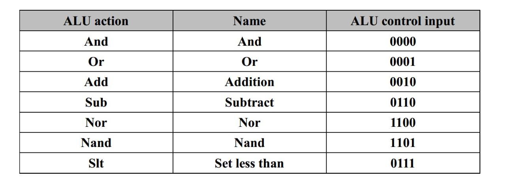
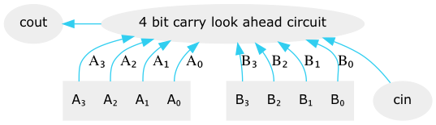
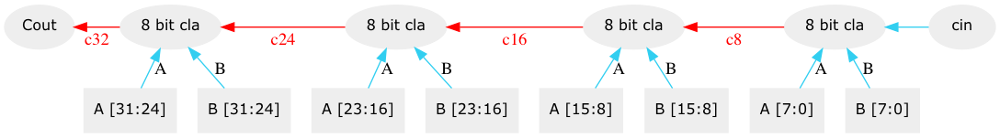
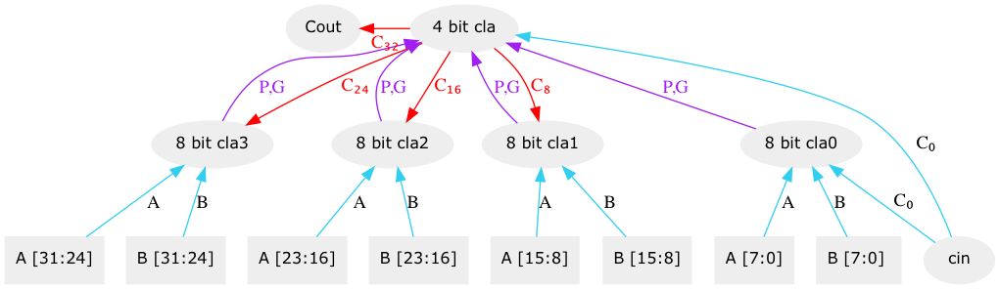
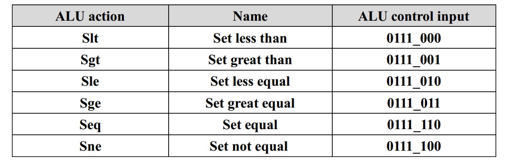

slt ALU
1 實作內容說明

首先實作 AND 與 OR 的功能, 在 input 前透過一個是否 invert 的 bit 就可以同時做出 NAND 與 NOR
同理, 利用這種做法我們只要實作加法則減法也做完了
1.1 adder
1.1.1 carry look ahead
原本透過 ripple carry adder 來實做加法時, cout 必須等待前一位的加法進位 (cin) 完成才能夠做運算, 於是會造成延遲
所以改用 carry look ahead 的方式, 意思是說 每一個 Cin 其實都可以透過前面的 A(i-1), B(i-1) … A0, B0 直接算出來,
於是 cout 就可以不用透過等待前面的 Cin 來算, 不過就需要額外的 carry look ahead circuit 來計算每一個 bit 的 carry out

1.1.2 32 bit carry look ahead adder
在這邊我們實作了一個 8 bit 的 carry look ahead circuit (cla) , 並將他串起來做成一個 32 bit adder, 但是這樣的話在彼此的 carry 傳遞過程中又會有 ripple 造成延遲

1.1.3 multiple level carry look ahead adder
於是我們在這之上再建了一層 cla, 事先將每一個 8 bit cla 需要得 carryin 算出來, 減少延遲, 也就是 multiple level cla

1.1.4 Reference
1.2 ZCV flag
1.2.1 check zero
將 result 的所有位數拿出來做 nor
1.2.2 check carry out
由 cla adder 拿出 carry out 之後, 再確認是否是作加減法
1.2.3 check overflow
考慮加法會 overflow 的情況, 當兩數同號的時候有可能會 overflow,
- 考慮正：overflow 成負數, MSB = 1, 第 32 bit 有 carryin 沒有 carryout
- 考慮負：overflow 成正數, MSB = 0, 第 32 bit 有 carryout 沒有 carryin
- otherwise：第 32 bit 有 carryin 就會有 carryout, vise versa
得到：當第 32 bit carryin 與 carryout 不同時就是 overflow
而減法可以 mapping 回加法所以就推論完了
1.2.4 Reference
1.3 set command

1.3.1 slt (set less than)
同號時考慮減法出來的結果, MSB = 1 則 lt = 1, 異號時只要 A MSB = 1 則 lt = 1
1.3.2 seq (set equal)
將加法中的每個 xor 的結果拿出來再做 and, 由於 instruction 的設計, 出來的是 1 代表 A, B 每一位都相同, 所以相等
1.3.3 other set command (sgt, sle, sge, sne)
現在我們有 lt, eq 兩個指標了, 其他的條件都可以用這兩個組出來, 我們希望使用的邏輯單元越少越好, 於是我們讓所有的 set command 在 alu 裡共用一條線路,
只在外面做判斷, 首先觀察 control input 三個 bit, 我們可以發現 MSB 代表只考慮 eq , 中間代表加入考慮 eq, LSB 代表 考慮 lt,
於是我們可以得到 set = (~[2]) & ([0] ^ lt) | ([1] & eq) 這條式子, 接進 LSB 的 alu 就完成了